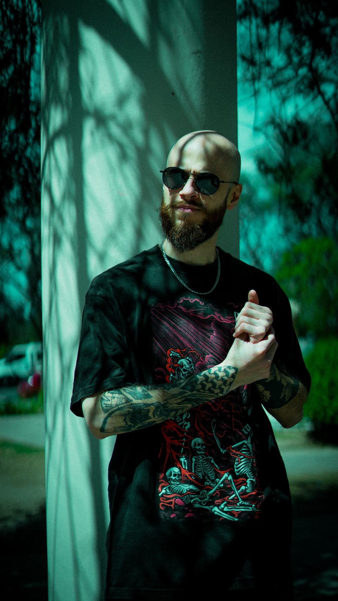
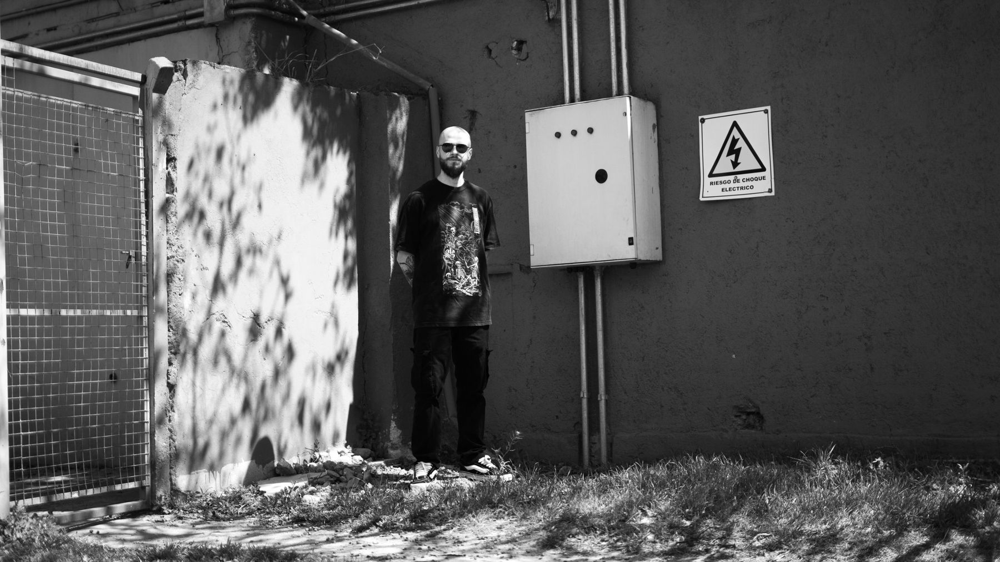
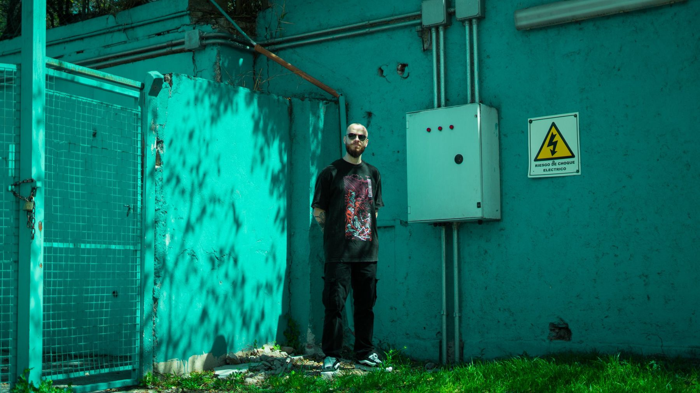
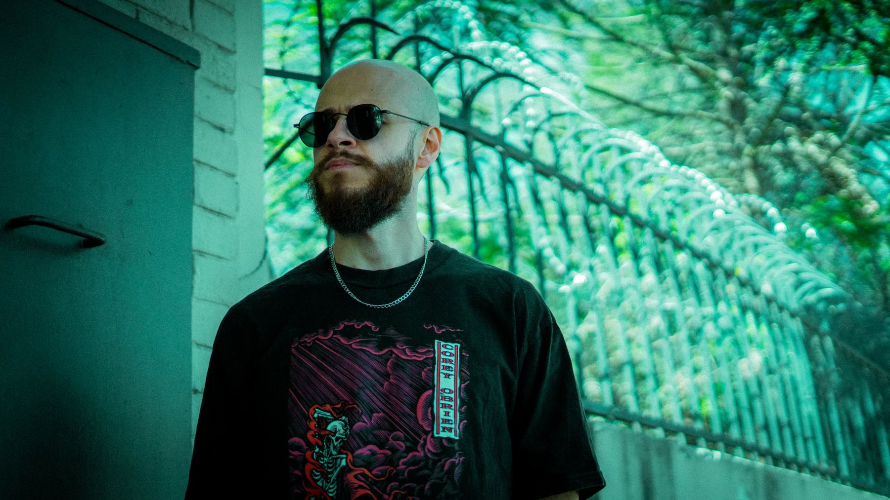
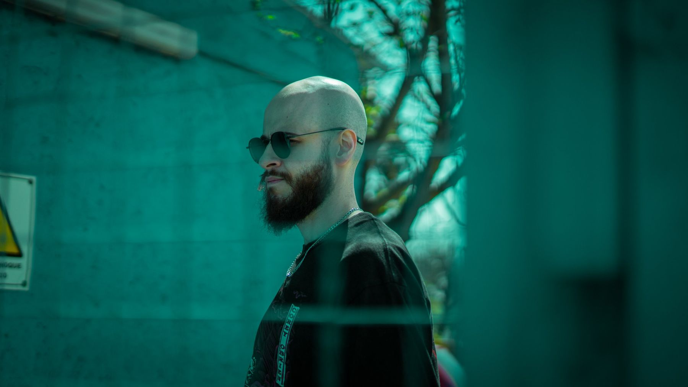
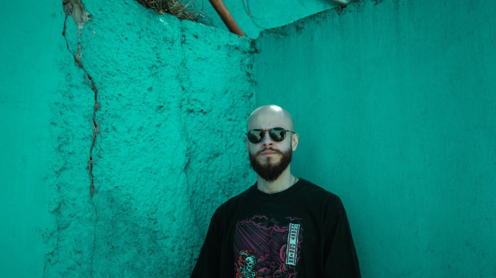
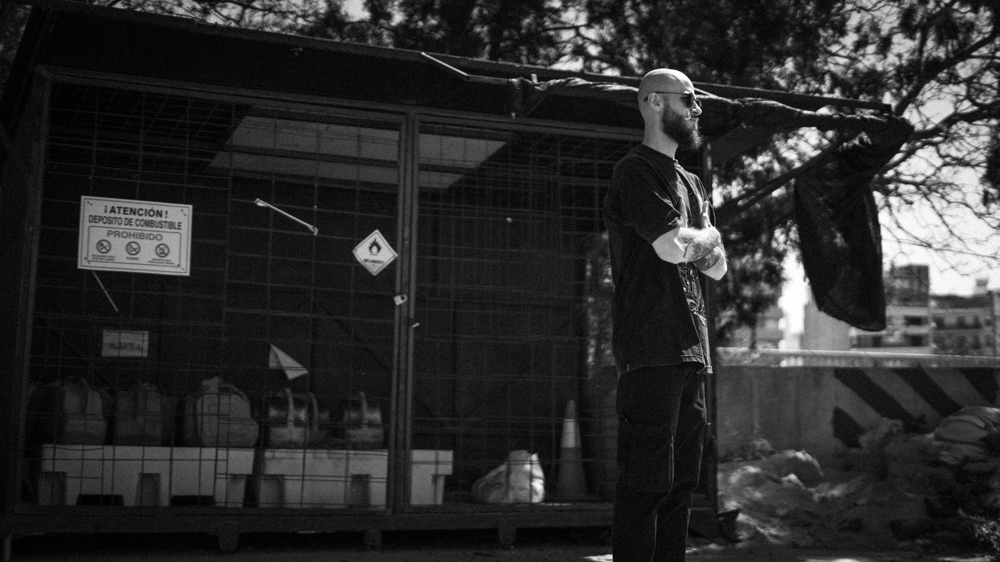
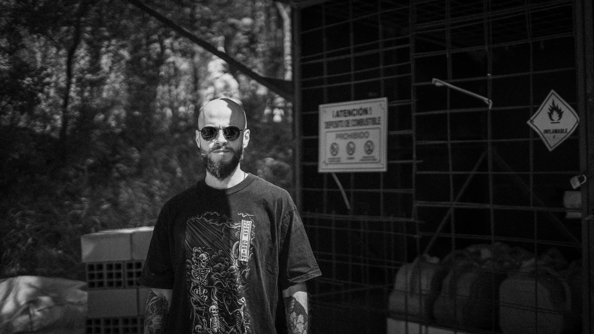
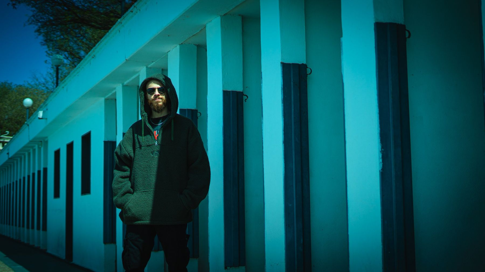
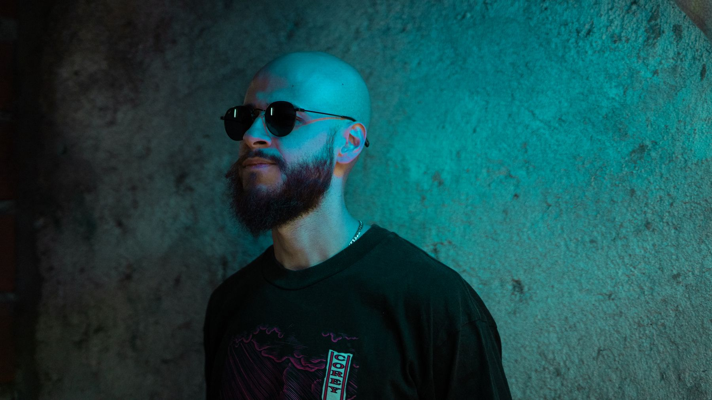

FedeGodoy
Groove de tech house, atmósferas melódicas y percusión que respira.


Día NocheDe la calle
a la cabina
Fotos de prensa
Ver todas en Drive ↗






El código detrás del groove
Fede Godoy es DJ de Córdoba, Argentina. Se mueve entre el tech house, el deep y el progressive, con un oído atento a la percusión.
Antes de las bandejas está la programación. Federico Nicolás Godoy viene del desarrollo de software, y eso se nota en cómo trabaja: sets construidos con estructura, flujos de audio pensados al detalle y un dominio natural del ecosistema digital detrás de cada set y cada transmisión.
Su base es el tech house, el deep house y el progressive, con pasadas por el melodic house & techno, el minimal deep tech y el indie dance. Cuando la pista lo pide, acelera hacia el speed garage, el UK garage y el tribal hardgroove, con congas y bongos al frente.
En el tech house y el minimal toma referencia de Franky Rizardo, Nacho Scoppa, Max Styler, Beltran y Nacho Bolognani. En lo melódico, de Ezequiel Arias, Mariano Mellino y Simon Vuarambon.
- Base
- Córdoba, AR
- Núcleo
- Tech · Deep House
- Melódico
- Progressive · Melodic
- Acelerado
- UK Garage · Hardgroove
Videos
Fechas
| T.B.A. | Próximas fechas por anunciar | Córdoba |
| 2026 / 27 | Booking abierto | Clubes, fiestas y eventos |
Rider técnico
- PlayersPioneer CDJ-3000 · CDJ-2000NXS2 · CDJ-1000
- MixerPioneer DJM-V10 (preferido)
- FormatoUSB exportado desde Rekordbox
- Estudio y streamingPioneer XDJ-RR · Edifier MR5